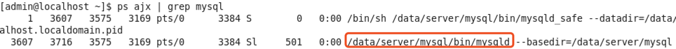
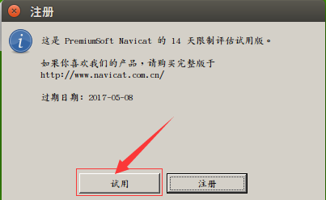
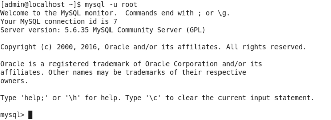

服务器端安装
- 当前使用的Centos镜像中已经安装好了MySQL服务器端，无需再安装，并且设置成了开机自启动
- 服务端用于接收客户端的请求、执行sql语句
- 启动服务(需要root权限)
su
输入root密码
service mysqld start
- 查看进程中是否存在mysql服务
ps ajx|grep mysql

- 停止服务(需要root权限)
su
输入root密码
service mysqld stop
- 重启服务(需要root权限)
su
输入root密码
service mysqld restart
配置
- 配置文件位置为/data/server/mysql/my.cnf
客户端
- 常用的有图形化界面客户端(navicat)、命令行客户端
图形化界面客户端navicat
- 可以到Navicat官网下载
- 将压缩文件拷贝到Centos虚拟机中，放到桌面上，解压
- 进入解压的目录，运行navicat，命令如下
cd /home/admin/Desktop/navicat112_mysql_cs_x64
./start_navicat
- 启动后如下图
- 点击两次“取消”按钮后如下图

- 点击“试用”按钮后如下图
- 问题：试用期到期
- 解决：删除用户目录下的.navicat64目录
cd ~
rm -r .navicat64
命令行客户端
当前使用的Centos镜像中已经安装好了MySQL客户端，无需再安装
最基本的连接命令如下，输入后回车
mysql -u root
- 连接成功后提示如下图

- 按ctrl+d或输入如下命令退出
quit 或者 exit